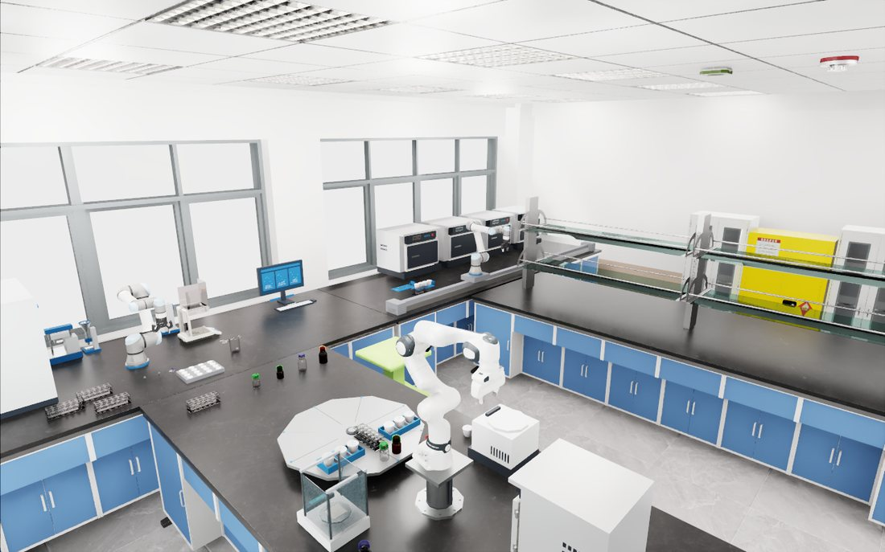
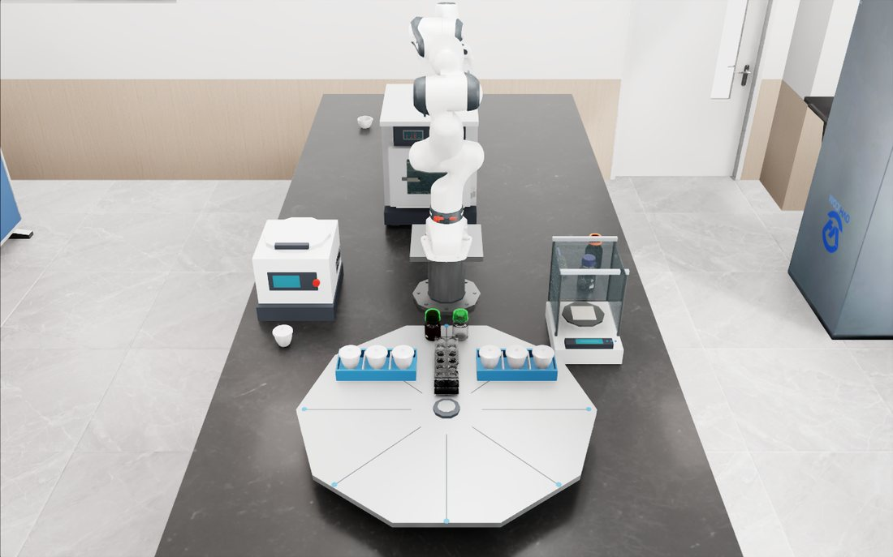
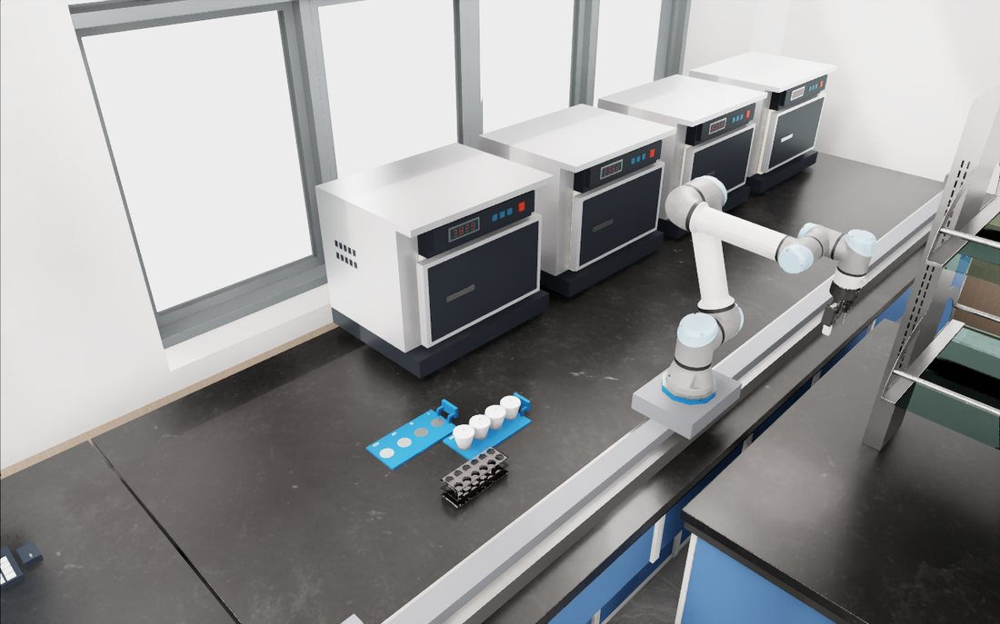
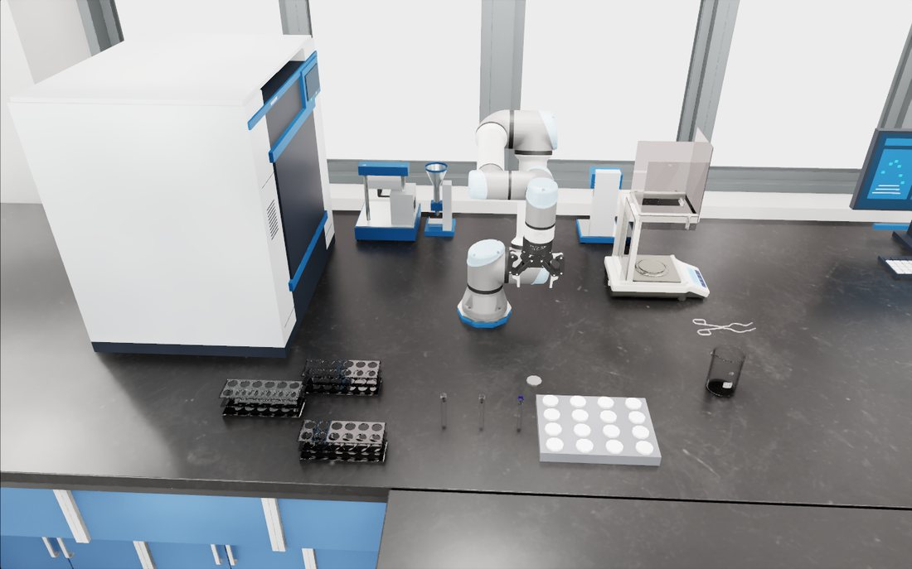

同一完整场景保存
选已完成任务的取出后、释放后和再抓后。绑定全部资产与布局，保存所有物体、控制器、随机状态、任务图和观测历史。
找回原来搭建的实验室、机器人与仪器，恢复真实演示入口；分别报告场景、物理执行和断点恢复。
下方是保存的 Isaac RTX / PathTracing 成片，不是 Cooking 网格，也不是新生成的概念图。Cooking 只承担任务学习诊断，不替代机器人 benchmark。




场景画质与摆放不是完整 benchmark 验收。B/C 仍有资格门与物理失败；不把可看的视频写成全任务、全变体或学习策略通过。
A r7 旧瓶位、旧机位、天平无玻璃罩。每瓶一条完整站位视频，点击阶段可定位。
版本化保存、局部恢复、全场景续跑与渲染回放，需要四种不同的证据。
| 能力 | 当前情况 | 状态 |
|---|---|---|
| 版本化 NPZ / JSON 保存 | 已有 schema、原子写入、身份字段；往返的规范化 JSON 载荷相同 | 已实现 / 文件层核验 |
| 局部携行恢复 | 历史 A100 run 恢复后归位约 0.240 mm；带运动学支撑 | 局部 PASS |
| 全场景恢复 | 研杵约 0.568° 超过 0.5°；恢复后跟踪 19 / 56 刚体 | FAIL |
| 任意运动中断点 | 保存了速度，但旧 adapter 恢复时清零；非零输入探针确认 | 不支持 |
| 随机状态 / 任务图完整继承 | seed 与 draw_count 不等于 RNG 内部状态；该 adapter 未完整恢复图位置 | 未闭合 |
| 新进程跨多个阶段续跑 | 未见完整闭合实测；四瓶 episode 未保存阶段 checkpoint 文件 | NOT_RUN |
| 原轨迹重新渲染 | 已有 steps.npz 位姿重放与多视角渲染 | 已实现，属于渲染回放 |
本机 GPU 驱动 / 库不匹配，因此本轮没有启动新的 Isaac 物理续跑，没有修改共享驱动。只读代码核对、CPU 文件与 setter 探针、原日志重算均有实际结果。
选已完成任务的取出后、释放后和再抓后。绑定全部资产与布局，保存所有物体、控制器、随机状态、任务图和观测历史。
新进程只凭保存包复原。从恢复后第一帧检查起，不默默清零速度，不用运动学支撑冒充纯物理恢复。
和不中断原轨迹比较全场景与终局，给出首个分叉字段。完整通过之后再计入长任务 benchmark。
这条基础设施前沿与任务学习实验并行保留。现有 56.80% Cooking 结果支持利用信息，不能证明机器人场景的长任务恢复、OPD 或 Robot RSI。
七段会话各恢复最近 850 条可见消息，共 5,950 条；另细读五条关键工具调用。全部会话已结束。本次没有读完全部早期消息，也没有修改原资产、旧轨迹或旧失败结论。